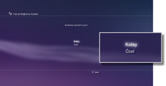
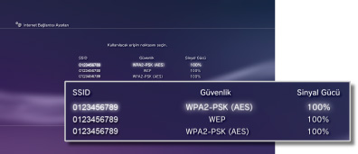
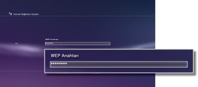

Ayarlar > Ağ Ayarları > İnternet Bağlantısı Ayarları (kablosuz bağlantı)
İnternet Bağlantısı Ayarları (kablosuz bağlantı)
Bu ayar yalnızca kablosuz LAN özelliğiyle donatılmış PS3™ sistemlerinde kullanılabilir.
Sistemi Internet'e bağlama yöntemini ayarlayın. Internet bağlantısı ayarları ağ ortamına ve kullanılan aygıtlara bağlı olarak değişir. Aşağıdaki prosedürde Internet'e kablosuz olarak bağlanıldığında tipik kurulum açıklanmaktadır.
1. |
Erişim noktası için ayarların tamamlandığını kontrol edin. |
|---|---|
2. |
Bir Ethernet kablosunun PS3™ sistemine bağlı olmadığını onaylayın. |
3. |
|
4. |
[İnternet Bağlantısı Ayarları] öğesini seçin. |
5. |
[Kolay] öğesini seçin.  |
6. |
[Kablosuz] öğesini seçin.
|
7. |
[Arama] öğesini seçin.
|
8. |
Kullanmak istediğiniz erişim noktasını seçin.  |
9. |
Erişim noktasının SSID'sini kontrol edin. |
10. |
Kullanmak istediğiniz güvenlik ayarlarını seçin.
|
11. |
Şifreleme anahtarını girin.  Şifreleme anahtarını girmeyi bitirdiğinizde ve ağ yapılandırmasını onayladığınızda, bir ayarlar listesi görüntülenecektir. |
12. |
Ayarlarınızı kaydedin. |
13. |
Bağlantıyı test edin. |
14. |
Bağlantı testi sonuçlarını onaylayın. |
 (Ayarlar) >
(Ayarlar) >  (Ağ Ayarları) öğesini seçin.
(Ağ Ayarları) öğesini seçin.


İpuçları
- Bağlantı başarısız olursa ayarlarınızı kontrol etmek için ekrandaki yönergeleri izleyin. Ayrıca Internet servis sağlayıcının verdiği bilgilere ve kullanılan ağ aygıtıyla verilen yönergelere de bakın.
- Bağlantıyı adım 7'de [Otomatik] > [AOSS™] öğesini seçtikten hemen sonra test ederseniz, yönlendirici ayarları tamamlanmayabilir ve bağlantı başarısız olabilir. Bağlantıyı test etmeden önce yaklaşık 1 veya 2 dakika bekleyin.